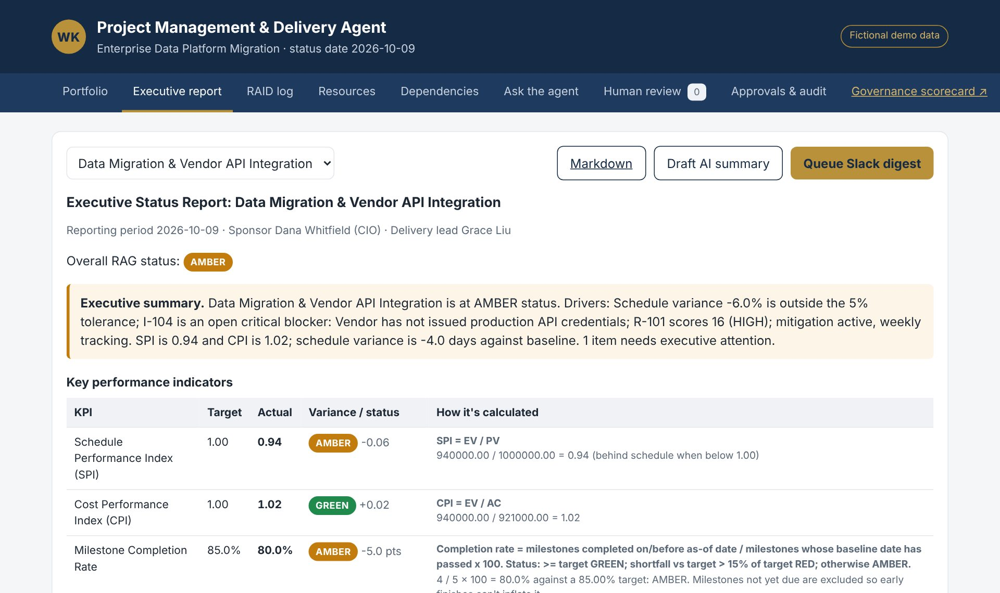
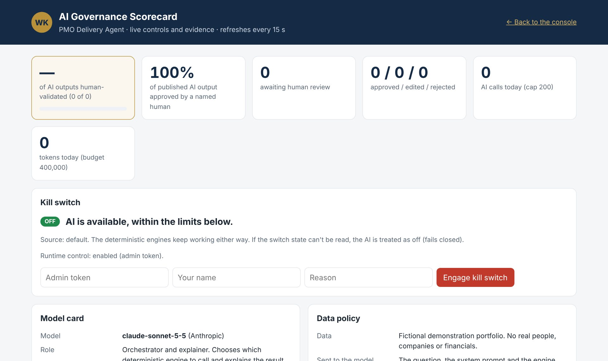

Status reporting is where trust in a PMO is won or lost. A wrong SPI, an invented risk score or an over-optimistic summary sent to a sponsor is a governance failure, not a typo. So this agent is built the way I believe AI belongs in delivery: Claude chooses which engine to call and explains the result in plain English; deterministic Python computes every figure; and every AI answer waits in a review queue until a named human approves, edits or rejects it.
What it handles
RAID log scoring
Risk exposure = Probability × Impact on 1–5 scales, banded LOW / MEDIUM / HIGH with the required action for each band.
Milestone health & earned value
SV, CV, SPI, CPI, EAC, ETC, VAC, TCPI and schedule variance in days, plus milestone completion rate, slips and overdue items.
RAG status with reasons
Variance thresholds, critical-path blockers and unmitigated risks — the overall status is the worst one triggered, and every trigger is listed.
C-level status reports
RAG, executive summary, KPI table with how each number was calculated, accomplishments, upcoming milestones, blockers and the RAID table.
Resource optimisation
Overallocated people, skills gaps and single points of failure across teams, and cross-project dependency conflicts.
Claude agent
Ask in plain English — “Which streams are RED and why?” — and the agent picks the engines, runs them and explains the answer as a draft for review.

The governance, built in
I picked four governance features for this agent and made each one real in the code, not in a policy document.
- Human review gate. Every AI output starts
PENDING_REVIEW. A named person approves it, edits then approves it, or rejects it with a reason. There is no bypass route, and names that identify an AI or automation are refused as reviewers — the AI cannot approve its own work. - Audit trail. Every AI call is logged with who, when, model, tools, tokens and outcome — including refusals and errors. The logs are append-only.
- Explainability. Every score returns its formula, inputs and reasoning: risk exposure, every EVM metric, RAG, utilisation, float and each report KPI.
- Governance scorecard. A live page shows the model card, data policy, limits, the kill switch and the percentage of AI output that has been human-validated.
Two more safeguards sit underneath: a grounding check compares every number in Claude’s answer with the engine results it received, so an output with an invented figure cannot be approved unchanged; and a limiter and kill switch cap requests per visitor, per day and by token budget — and everything fails closed.

The rules, made explicit
RAG status is the worst status triggered — and the rules are written down, not left to judgment calls or a model’s mood.
| Status | Triggered by |
|---|---|
| GREEN | Adverse schedule and cost variance both within 5%, no critical blockers, no unmitigated medium or high risks |
| AMBER | Adverse variance above 5% and up to 15%; an unmitigated MEDIUM risk; a HIGH risk under weekly mitigation; a critical blocker not on the critical path |
| RED | Adverse variance above 15%; a blocker on the critical path; an unmitigated HIGH risk (executive intervention required) |
How it’s built
- A FastAPI service with 23 API operations.Portfolio, RAG, EVM, milestones, RAID, risk scoring, executive reports, resources, dependencies, the agent, the review queue, approvals, audit and governance — documented with interactive API docs.
- Eight deterministic engines.Earned value, risk, RAID, RAG, milestones, reports, resources and dependencies, using exact decimal arithmetic. The language model is never in the numeric path.
- Claude on top, with bounded authority.Nine read-only tools plus one that can only propose an outbound Slack digest for a named human to approve. No tool writes project data or sends anything.
- Built to run and to be checked.PostgreSQL schema, Docker Compose, a Render blueprint, and 98 automated tests run on every push by GitHub Actions.
See it, or talk through it
Built on a fictional program as a portfolio reference. Ask the agent a question, review its answer yourself, read the source — or let’s talk about governed AI for your PMO.
Launch the live sandbox View the source Book a governance callThe sandbox runs on a free instance that sleeps when idle — the first load may take 30–60 seconds to wake. Data resets each time it wakes. Built on fictional data.